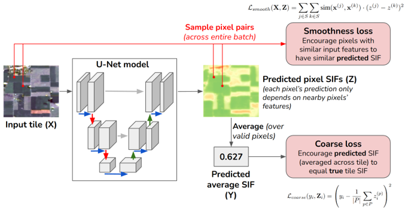
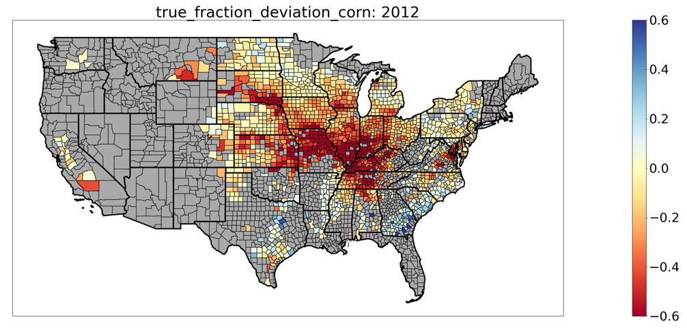
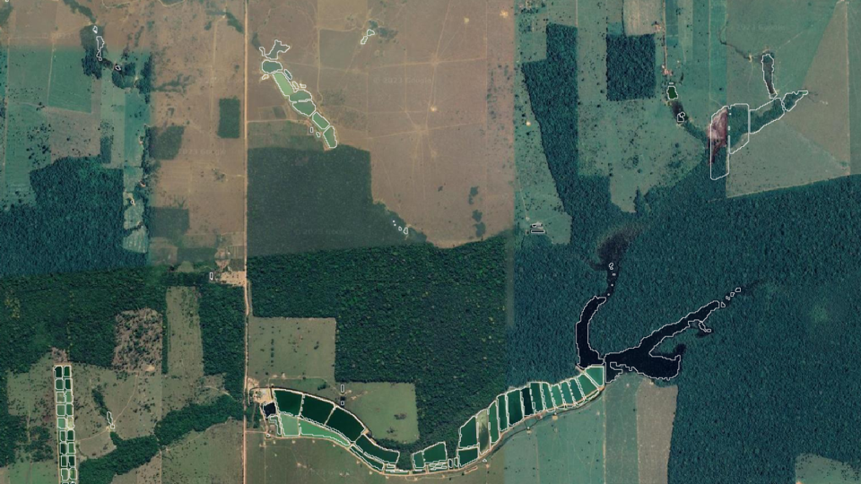

Joint work with Di Chen, Jiaming Wen, Ying Sun, Carla Gomes
Solar-induced chlorophyll fluorescence (SIF) is a powerful tool to measure plant productivity from space. However, satellites can only measure SIF at a coarse spatial resolution. For example, we only know the average SIF of a 3x3 km tile, and cannot distinguish how individual farms are doing. To address this, we worked with plant scientists to develop Coarsely-Supervised Smooth U-Net (CS-SUNet). CS-SUNet takes in fine-resolution satellite imagery (Landsat), and predicts SIF for each 30m pixel, even though we only have labels at a much coarser resolution (3km). Even though the supervision is extremely weak, the model can produce accurate fine-resolution predictions thanks to strong regularization techniques (smoothness loss, early stopping) that encourage pixels with similar input features to have similar SIF predictions. Our method resolves fine-grained variations in SIF more accurately than existing methods.
For more details, see this paper (IJCAI 2022):
[1] Joshua Fan, Di Chen, Jiaming Wen, Ying Sun, Carla Gomes. "Monitoring Vegetation from Space at Extremely Fine Resolutions via Coarsely-Supervised Smooth U-Net.” In Proceedings of the Thirty-First International Joint Conference on Artificial Intelligence (IJCAI-22), AI for Good track, 5066-5072.
Joint work with Junwen Bai, Zhiyun Li, Kaitlyn Chen, Ariel-Ortiz Bobea, Carla Gomes
Forecasting crop yields accurately is crucial for food security and poverty alleviation. In collaboration with agricultural economists, we have developed deep learning techniques to forecast crop yields for US counties from a complex array of weather, soil, and management data. We use 1D CNNs to model temporal structure, and a “county embedding” and graph neural network to model spatial structure [2]. We have adapted interpretability techniques to temporal data to understand model predictions. Our model performs comparably to the USDA forecast in August and September. We are working on further improvements, such as using hypernetworks to account for spatial heterogeneity in the prediction function, and developing a variant of the Transformer architecture with inductive biases to handle the continuous nature of time series data.
Some of this work was presented in this AAAI 2022 paper:
[2] Joshua Fan*, Junwen Bai*, Zhiyun Li*, Ariel Ortiz-Bobea, Carla Gomes. "A GNN-RNN Approach for Harnessing Geospatial and Temporal Information: Application to Crop Yield Prediction.” In Proceedings of the AAAI Conference on Artificial Intelligence (AAAI-22), AI for Social Impact track, 11873-11881.
Joint work with Laura Greenstreet, Felipe Siqueira Pacheco, Yiwei Bai, Marta Eichemberger Ummus, Carolina Doria, Nathan Oliveira Barros, Bruce R Forsberg, Xiangtao Xu, Alexander Flecker, Carla Gomes.
Ecologists are interested in understanding the environmental impact of aquaculture expansion in the Amazon, yet there is little data on where fish farms are located. I am working with collaborators to create methods to detect fish farms from remote sensing imagery. Since there is little labeled data, I developed contrastive learning methods to leverage large amounts of unlabeled images to learn a better representation of each waterbody. This required designing novel augmentations to deal with multispectral images, emphasize the shape of waterbodies, and remove information from the irrelevant background landscape. Our learned representations significantly improved the model’s ability to generalize to new regions with little data. Some of this work was published in a KDD workshop paper [3], and we are continuing to work on making our methods more robust.
[3] Laura Greenstreet, Joshua Fan, Felipe Siqueira Pacheco, Yiwei Bai, Marta Eichemberger Ummus, Carolina Doria, Nathan Oliveira Barros, Bruce R Forsberg, Xiangtao Xu, Alexander Flecker, Carla Gomes. Detecting Aquaculture with Deep Learning in a Low-Data Setting." Fragile Earth workshop at KDD 2023. Long Beach, CA, USA.